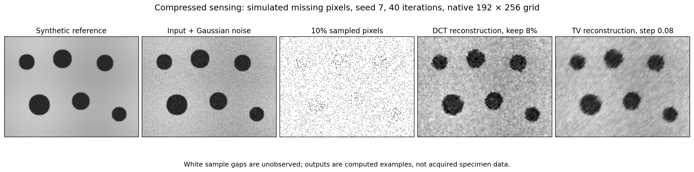
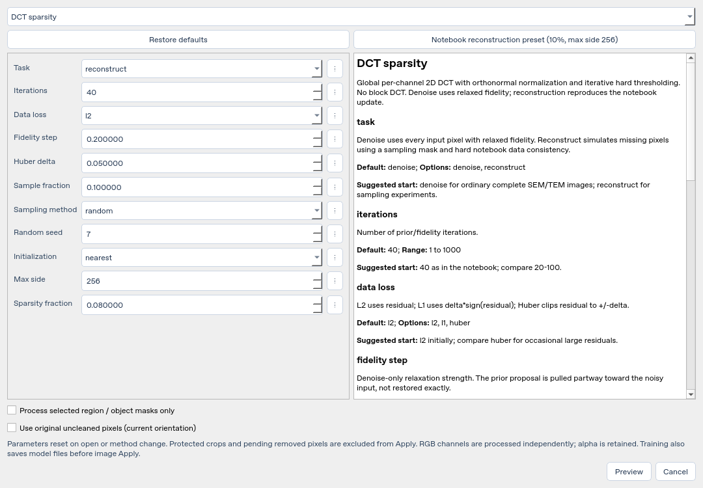
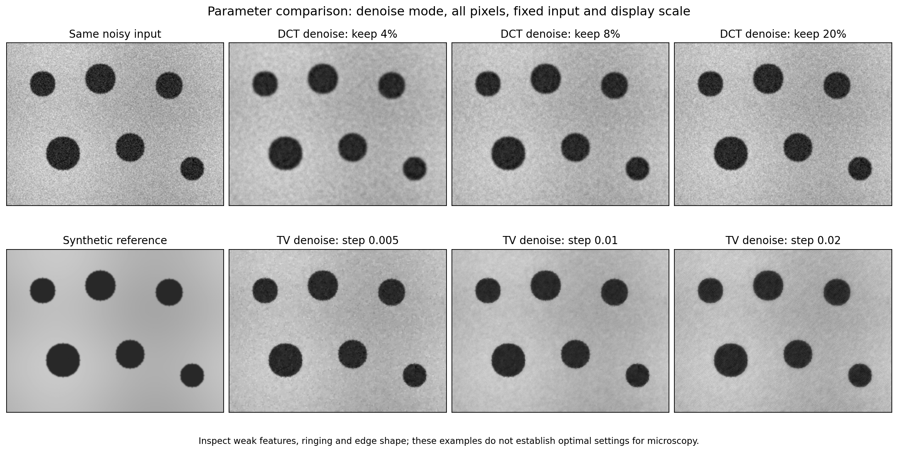

Compressed sensing: controls and suggested parameters#
Compressed sensing here is a sampled reconstruction experiment based on the supplied notebook. It is different from denoising a complete acquired image. The DCT and iterative-TV methods share the same dialog and sampling controls. This implementation simulates missing positions from a complete input; it does not import a detector acquisition sampling pattern.


Actual app algorithms, synthetic 192 × 256 data, seed 7, 40 iterations, native grid. The notebook’s optional 256-pixel resolution cap was not applied in this figure. Output appearance is not a claim about microscopy reconstruction quality.
1. Processing → Denoise… → choose a method#
Choose DCT sparsity or TV iterative (notebook). Despite the menu name, their Task control selects either ordinary denoising or sampled reconstruction. The ? beside each parameter shows its meaning, units, bounds and suggested starting range in the right-hand panel.


2. Task and preset: decide which experiment to run#
Input/question |
Task |
Start here |
|---|---|---|
Complete noisy SEM/TEM image |
|
40 iterations, relaxed fidelity 0.20, native grid ( |
What can be reconstructed from simulated missing positions? |
|
Random sample 0.10, seed 7, nearest initialization, 40 L2 iterations |
Reproduce the notebook-sized trial |
Notebook reconstruction preset button |
Same reconstruction settings with max side 256; DCT 0.08 or TV step 0.08 |
Restore defaults resets the current method, including Task. Changing the method or reopening the dialog also resets parameters. The preset deliberately switches Task to reconstruct; do not use it as a universal denoising preset.
For full-image denoising, every pixel is observed but fidelity is relaxed. For reconstruction, fidelity is applied at the sampled positions. With L2 and 100% sampling, hard consistency restores every input value each iteration: it returns the input and therefore cannot denoise it.
4. Method-specific controls#
DCT sparsity: retain a fraction of coefficients#
Sparsity fraction defaults to 0.08. Compare 0.04–0.20 first. A smaller value retains fewer full-image 2D DCT coefficients; it can suppress noise, but may remove small/faint objects and introduce ringing near edges. Larger values retain more detail and more noise. Threshold ties can retain slightly more coefficients than the requested fraction. This is global per-channel DCT, not block JPEG compression or a learned dictionary.
TV iterative (notebook): choose an iteration step#
TV step defaults to 0.01 for denoise; compare 0.005–0.02. The notebook reconstruction preset uses 0.08. Larger steps can oscillate or distort edges. This is a gradient/divergence update step, not the regularization weight in the separate TV restoration (Chambolle) method.
Gradient epsilon defaults to 0.000001, added inside
sqrt(gx² + gy² + epsilon). Keep it fixed for a first comparison; it stabilizes
the gradient magnitude near flat regions rather than setting the sample fraction.


Computed denoising examples with all pixels observed, 40 iterations, fidelity 0.20 and a fixed display scale. Compare the same weak boundaries and background; no setting is declared optimal from this synthetic illustration.
5. Target, source, Preview and Apply#
After choosing parameters:
Select Process selected region / object masks only if a region or selected masks should receive the change; otherwise the target is the whole image.
Select Use original uncleaned pixels (current orientation) when you want the acquired source instead of current derived pixels.
Click Preview, compare original and result, then Apply or Cancel.
Inspect small-object edges, weak contrast, texture and artificial ringing. Keep the seed, input state, normalization and full parameter set with results.
Apply changes only the target; algorithms can use surrounding/full-image context. Protected retained crops and pending removed regions are excluded. Cancel leaves image pixels unchanged. Native projects retain processing records for recovery.
6. How to judge a parameter choice#
Use a representative crop and change one parameter at a time. With synthetic reference data you can measure error against the known reference. With a real image, a smoother result alone does not prove that specimen information was preserved. Review independent annotations, edge profiles and downstream measurements. Prefer native resolution for scientific comparisons.
For all allowable bounds and other methods, see the
complete parameter reference. The
notebook page explains the unchanged original upload and its
external teaching-image dependencies. Figures can be reproduced with
python docs/tools/generate_workflow_figures.py from the repository root.